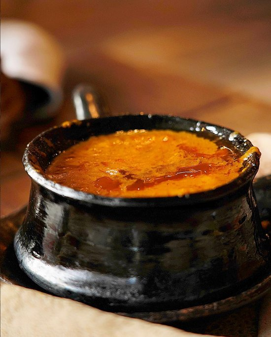

This is a recipe for making shiro wot

Shiro Wot is a spicy Ethiopian chickpea stew that is often served with injera. It is known for its rich flavor and creamy texture.
Here is a simple recipe to make shiro wot:
- Ingredients:
- 2 cups chickpea flour (shiro powder)
- 1 large onion, finely chopped
- 1/4 cup vegetable oil
- 2 tablespoons berbere spice mix
- 4 cloves garlic, minced
- 1 inch ginger, grated
- Salt to taste
- 4 cups water
- Instructions:
- In a large pot, heat the vegetable oil over medium heat.
- Add the chopped onions and sauté until golden brown.
- Add the garlic and ginger, and cook for another minute.
- Add the berbere spice mix and cook for 2-3 minutes until fragrant.
- Add the chickpea flour and stir to combine.
- Add water gradually, stirring continuously to avoid lumps.
- Add salt and simmer for 20-30 minutes until thickened.
- Serve hot with injera.
Back to home